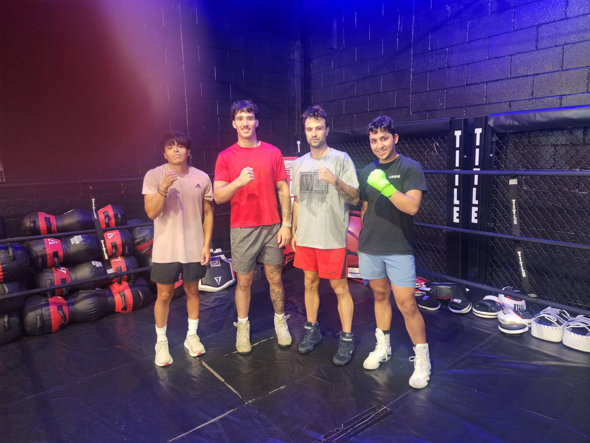

Home Page
If you're thinking of starting to box, you definitely should give it a try, there are many things to consider when thinking of training that I will go over. Firstly, my name is Mateo Geringer. I have been boxing since I was 18 years old starting in the middle of my senior year, which some may consider late, but I have progressed fast as have many world champions that started even later than I have. Yes, many people won't reach the level they achieved and become champions, but it shows anything can happen and you shouldn't count yourself out. My love for boxing started from seeing popular YouTubers boxing with each other who had no prior boxing experience but nonetheless gave it a try. It inspired me to start training along with the fact I already liked combat sports. Boxing taught me how to work harder than I ever had before and develop a huge amount of respect to combat sport athletes. Here are some links that I recommend checking out that can give you information on professional boxers and the whole YouTube boxing story that is quite fascinating.
Links and videos I recommend checking out: 7 Boxers Who Started Late and How They Became Champions, The Entire History of YouTube Boxing, Why you should start boxing – Grand Valley Lanthorn

A few things to note about boxing is that:
- Boxing gyms are like regular gyms in the sense of having a great community and attitude of helping each other improve, so you shouldn't fear being judged or not being welcomed. As long as you go in open minded, humble and ready to learn you will be respected.
- Boxing if you end up liking it will keep you invested in your fitness and health. For me I've always enjoyed working out at the gym and I ran track throughout high school, but it was only when I started boxing that my interest in fitness skyrocketed.
- The YouTube boxing space is now 10x larger than it was from that video given that it is 3 years old. While I may not like some of the YouTubers that have picked up the sport of boxing I recognize that their viewership and ability to market fights is a good thing for the sport. People are interested in boxing more than ever partly due to the rise of YouTubers taking the risk and fighting. Some like Jake Paul who has dedicated the last 6 years or so to fighting has become a pretty decent boxer and gotten the opportunity to fight some great fighters. He is a living example that hard work can pay off but remember he also has the money and time to spend training that most people cannot.
- Fear of getting hit is normal — it is not in our nature to get hit in the face constantly and stand in a ring with someone. Only time and boxing more frequently will slowly reduce the nerves/constant flinching and make you more comfortable. Just like anything you need to practice in order to get better.
- Always respect whoever gets in the ring no matter how good or bad they are. Deciding to fight is a major risk because it could end in disaster for anyone. Forget the embarrassment from possibly losing or getting knocked out — people have died in a boxing ring or because of a fight. That's why when its all said and done shake your opponents hand and have good sportsmanship.

Benefits of training boxing from any age — great outlet, source of cardio, gets your body in shape and works every part of your body. My own personal experience and why I love the sport. Some images of boxers/photos of me which I will include later and links to articles I found to support my takes.